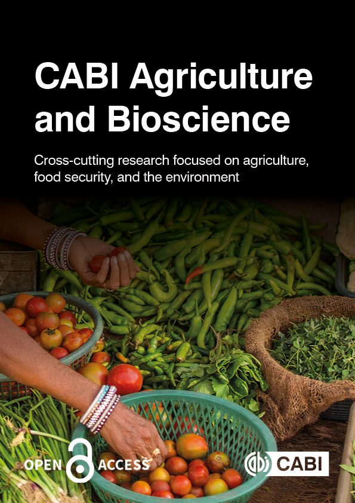
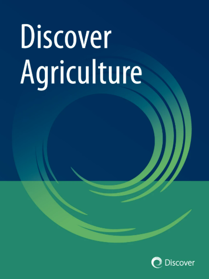
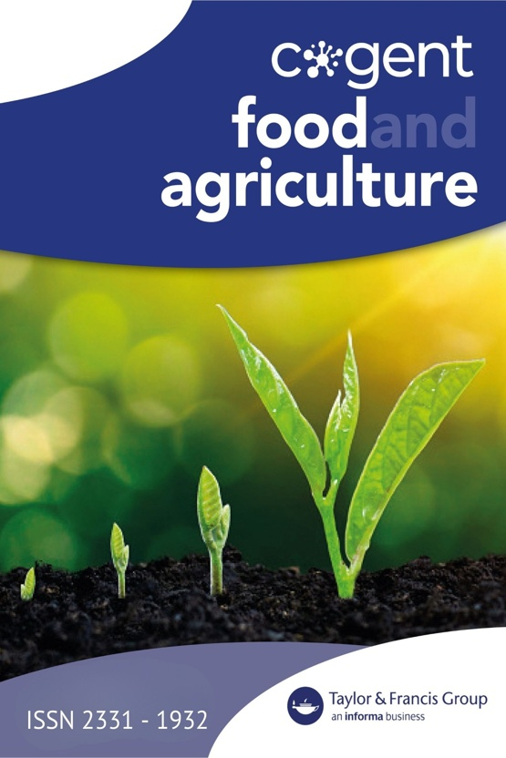
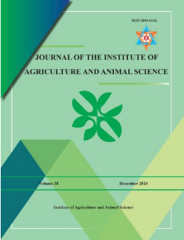
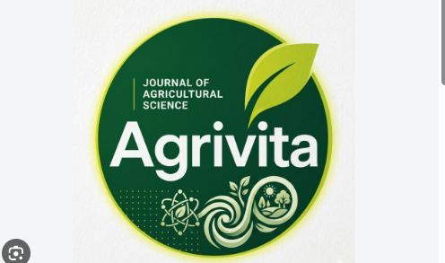
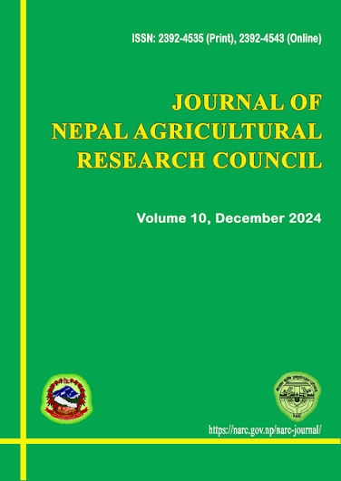

Research & Publications
Selected Publications

Chapagain, S., Shrestha, S., Kandel, B. P., & Rana, D.
Integrating NDVI and Canopy Temperature Across Phenological Stages for Drought Phenotyping and Grain Yield Prediction.
Under 2nd Revision.
Chapagain, S., Kandel, B. P., Shrestha, S., et al.
Screening drought tolerance capacity in wheat genotypes using physiological traits and drought tolerance indices in the mid-hills of Nepal.
Advances in Agriculture
(2026).
Chapagain, S., Shrestha, S., Kandel, B. P., Rana, D., & Poudel, A.
Characterization of phenotypic diversity and trait associations in Nepalese finger millet landraces.
CABI Agriculture and Bioscience
(2026), 7(1).

Chapagain, S., Kandel, B. P., Shrestha, S., et al.
Deciphering genetic variability and trait associations in Nepalese finger millet landraces for yield improvement.
Discover Agriculture, 4, 130
(2026).
Chapagain, S., Kandel, B. P., Poudel, A., et al.
Assessment of early seedling stage indices for the selection of potential drought-tolerant bread wheat genotypes.
Discover Applied Sciences, 8, 248
(2026).

Chapagain, S., Kandel, B. P., Shrestha, S., Poudel, A., & Yadav, S. P. S.
Identifying superior finger millet (Eleusine coracana L.) landraces using the multi-trait genotype-ideotype distance index (MGIDI).
Cogent Food & Agriculture, 11(1), 2592358
(2025).

Chapagain, S., Kandel, B. P., Adhikari, A., Poudel, A., & Kandel, M.
Estimation of genetic parameters and trait association in wheat (Triticum aestivum L.) genotypes.
Journal of the Institute of Agriculture and Animal Science, 39(1), 151–155
(2025).

Ghimire, U., Kandel, B. P., Poudel, A., Poudel, R., Tripathi, A., Gurung, R., & Chapagain, S.
Agro-morphological characterization of maize (Zea mays) accessions in Lamjung, Nepal.
AGRIVITA, Journal of Agricultural Science, 48(3), Article 4966
(2025).

Kandel, B. P., Regmi, A., Chapagain, S., & Sharma, S.
Diversity assessment and farmer participatory selection of proso millet (Panicum miliaceum L.) accessions in Lamjung, Nepal.
Nepal Agriculture Research Journal, 17(1), 122–137
(2026).